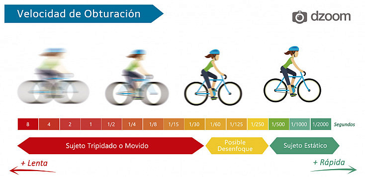

Apertura
La apertura se refiere al tamaño del diafragma en el objetivo de la cámara. Afecta la cantidad de luz que entra y la profundidad de campo de la imagen.
- Gran apertura (f/1.4 - f/2.8): permite una mayor absorción de la luz a cambio de una menor profundidad de campo.
- Pequeña apertura (f/8 - f/22): disminuye la cantidad de luz que entra a la cámara a cambio de una mayor profundidad de campo.
Velocidad de Obturación

La velocidad de obturación controla el tiempo que el sensor de la cámara está expuesto a la luz. Influye en la nitidez de la imagen y en la capacidad de capturar movimiento.
- Alta velocidad (1/1000s - 1/4000s): Congela el movimiento, pero a mayor velocidad, menor tiempo para que la camara absorva la luz
- Baja velocidad (1/30s - 1s): Crea desenfoque de movimiento, pero permite mayor entrada de luz.
Sensibilidad ISO
El ISO mide la sensibilidad del sensor de la cámara a la luz. Afecta la claridad y el ruido (aberraciones cromatricas generadas por un alto nivel de ISO) en la imagen.
- Bajo ISO (100 - 400): Menos ruido, menos luz, mejor nitidez de imagen.
- Alto ISO (1600 - 6400): Más ruido, pero permite fotografiar en condiciones de poca luz.
Conclusión
Es importante tener estos conceptos claros para capturar esos momentos especiales como un profesional. Ahora puedes jugar con ellos y probar distintas combinaciones hasta que encuentres la que se aplica a tu situación.